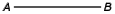
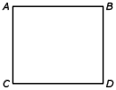

Беседа 2970 от 3877 · Беинса Дуно
Надежда, вяра и любов
Сряда, 5 часа сутринта
Отче Наш
„В Началото бе Словото“
Кое е най-важното за добрия човек? Някой задава въпроса: Кое е най-важното за богатия човек? Кое е най-важното за бедния човек? Кое е най-важното за здравия? Кое е най-важно за болния? Човек може да бъде царски син и да не направи нищо и да бъде овчарски син и да направи нещо. Благородството на един народ [не] се познава по неговата кръв, нo по ума. Сега казвате, че трябва да имате ясна представа. Да имаш ясна представа, че някой е богат, какво ще ти допринесе? Знаеш точно колко милиона има. Казвате: „Ясна представа човек трябва да има.“ Да кажем, имаш ясна представа колко имаш да дължиш, колко полици имаш. Имаш ясна представа колко имаш да вземаш. Питам, в тия двата случая, какво е отношението? И в двата случая имаш ясна представа. Имаш ясна представа колко да дадеш, но имаш 20–30 полици и то крупни, по 10–20 хиляди лева всяка една. Имаш ясна представа, ще те смути. Имаш ясна представа да вземаш. Тогава, какво ще бъде състоянието? Имаш ясна представа, [че] вярата ти е слаба; имаш ясна представа, че вярата ти е силна. Представете си, че имате една стая и една подпалка. Да кажем, че тук имате една стая, един покрив, но представете си, че вие сте на [втория] етаж. Но представете си, под вас, слаби са тия греди. Вие трябва да имате ясна представа за гредите на вашия етаж, защото, ако си позволите да турите повече тяжест, вие всички ще слезете на първия етаж. Много пъти хора, които са вярващи, стават невярващи. Аз го обяснявам. Вярата е на втория етаж. На първия етаж са материалисти, на втория етаж са вярващи, а на третия етаж са онези, които имат Любовта. Човек, който е на първия етаж, аз в любовта му не вярвам. Човек, който е на първия етаж, и във вярата му не вярвам. На неговия материализъм вярвам. Онези от вас, които не разсъждавате, казвате: „Защо да е така?“ Ами че как трябва да бъде? – „Всичките хора трябва да бъдат равни.“ Какво разбирате под думата „равенство“? – Еднакво право трябва да имаме. Еднакво право трябва да имаме [в] ядене, пиене, във вземането на храната и водата, но като дойдете до положението да започнете, не може да имате еднаква храна. Един обикновен гражданин и един цар не могат да имат еднакво право. Царят има големи права, заповядва. А обикновеният гражданин заповядва на децата си, заповядва на своите волове, на говедата си, на другите в държавата не може да заповядва. Вие, ако излезете в природата, може ли да заповядвате? Някои мислят, че сега вярват в Бога. Може ли да заповядваш в природата? Аз имах един приятел американец. Той се казваше Браун, мистър Браун. Той вярваше, че ако се помоли на Бога да спре земята и земята ще спре. Ако се помоли да тръгне, ще тръгне. Той се смееше, но казваше: „Вярвам в това.“ „Рекох, защо не го направиш?“ Казва: „Съжалявам хората.“ Туй го наричаме ние въображение, че земята някой може да я спре така. Бог може да спре земята, но ти, като човек не можеш да спреш земята. Има неща, които за човека са невъзможни. Той може само да предполага, че може да спре земята, но Този, Който може да спре земята, не е той. То е Божественото. Бог може да спре земята. А пък сега друго едно значение. Всеки от вас може да спре земята, когато искате, когато кажете, да се спре. Като кажете да се спре, спира се, като кажете на земята да тръгне, ще тръгне. То е вашето тяло. Тялото е земята. Като кажеш на тялото си да върви, върви. Като му кажеш да се спре, спира се. Следователно, всеки на своята земя, на своето тяло, може да заповяда да спре и да тръгне, когато иска. По аналогия ако мислите, че и земята може да се спре, но земята не е ваше тяло. Тя принадлежи някому другиму, понеже сме странници на земята. Странници – значи земята не е наша собственост. Ние нямаме право да разполагаме с чужда собственост. Погрешката на всичките хора е в това, че всичките хора грешат общо. Всеки може да мисли, че може да заповядва на другите хора. Той се лъже. Влияят си хората. За пример слънцето влияе на земята, че я притегля към себе си. Земята, и тя влияе на слънцето. Земята привлича месечината, но и месечината привлича земята. Земята се върти около слънцето, месечината се върти около земята. Но месечината си има свой живот и земята си има свой живот и слънцето си има свой живот. Да допуснем, че вие искате да заповядвате някому. Какво ще придобиете? Да допуснем сега нещо, може да го допуснем, което не може да стане. Да допуснем, че вие може да спрете земята в нейния път. Какво ще направите най-първо? На кое пристанище ще спрете земята? Да направим една аналогия. Земята, това представлява едно материалистическо схващане на човека. Човек, който иска да спре земята в нейния път, той е краен материалист. В моя ум е това, нищо повече. Казва: „Аз може да спра земята!“ Да, когато спреш земята, този човек всякога спира и той се спира, на ония материалистически станции. За него нивите имат цена. Къщите имат цена, говедата, кравите имат цена, конете имат цена, всичкото има цена. Допуснете, че друг човек казва: „Аз обичам слънцето.“ Какво заключение ще извадите, че обича слънцето? Той обича, но как се обича слънцето? Има две твърдения. Твърдят, че не може да обичаш някого, който не те обича. И другото твърдение е, че може да обичаш само този, който не те обича. Друго едно твърдение, че може да мразиш само тогоз, който те обича. Никога не можеш да мразиш този, който не те обича. Психологически е вярно. Един англичанин не си го срещал никъде, живее на земята, може ли да го мразиш? Щом има вземане и даване, може да има повод. Ще се създаде някакъв инцидент. Сега психологически, какво подразбираме? Че може да обичаш само този, който не те обича? Той няма никакво отношение. Може ли да обичаш една вода, която някой пил? – Тази вода излязла от него. Преди години слушах един американски професор, който искаше да убеди, държа лекция, че може да се пречисти така нечистата вода, че да се пие. Взел вода от клоаците на Ню-Йорк, пречиства я. В 4–5 шишета взел вода и казва: от еди-кой клоак. Пречиства я и била вкусна. Вярвате ли, тази вода, която е извадена оттам, е чиста, както онази, която пием? Тогава може ли да обичате един човек, когото другите обичат? Ако приложите сега Любовта, вие прилагате, но теоретически прилагате. Казано е, че не може да обичаш един човек, който няма отношение към тебе. Но какво ние подразбираме под думата „отношение“? Между тебе и него трябва да има някаква връзка. Ти в един дом имаш брат, но този твой брат, каква връзка има? Казвате, че всички хора са братя. Не са всички хора братя. По кръв не са всички братя. Братя са само родените от един баща и една майка по кръв. До четвъртото поколение са братя и сестри в едно отношение. Когато ние казваме, то е по отношение на първия човек, на Адама са братя. По отношение на първия човек Адама, всичките хора са излезли от Един Баща. Тогава връзките са онаследени. Всички излязли от Един Баща, но сега, в туй поколение, бащата не е Адам, нито Ева ти е майка. Ти имаш съвсем друг баща, който е подобен на Адама и друга майка, която е подобна на Ева. Правили ли сте вие изчисления колко поколения са минали от Адама до сегашното поколение? Онзи ден ви казах, че човек има 30 милиарда клетки. По една стотинка, 30 милиарда колко правят? (– 300 милиона лева.) Значи, имате един бюджет на вашия организъм, 300 милиона външен бюджет. А за сто деня какъв ще бъде? – 30 милиарда. Значи за 100 деня ще имате близо [30] милиарда, а за 300 деня, [90] милиарда. Ако вземете тази част, задната част [на главата], има една греда вътре, [на] която е поставена човешката справедливост – съвестен човек е. За някои хора казваме, че той е безсъвестен. Какво подразбира? – Че е лош човек? Вие криво понятие имате. Безсъвестен значи, слаб е в себе си, не е як. Голям товар не туряйте. Ако на този, безсъвестния турите доста пари, ще влезе в първия етаж. Значи горе не издържа, понеже без да иска, тази тежест на парите ще събори втория етаж, ще направите пакост и на човека и на себе си, и вашите пари ще идат. А на този, на третия етаж, има друг един пояс през средата. Той голямо въображение има. Не е така ясно. Ако си представите, че горната част представлява челото на човека, а тази, кривата линия представя главата, дължината и широчината на главата. Тук са гредите на неговата съвест. А горе са гредите на неговата любов. Отпред са гредите на неговото милосърдие. Човек, който не е милосърден, слаби му са гредите на милосърдието. Човек, който не е религиозен, слаби му са гредите на религиозността. Човек, който не е съвестен, гредите му са слаби. Вие сега мислите, че някои хора са родени така, религиозни. Учението е вече един процес. Учен е онзи, който се учил. Той се ражда с възможности и ако не се е учил, той не може да бъде учен човек. Човек се ражда с възможност да бъде религиозен, но отпосле става религиозен. Човек се ражда с възможност да бъде милосърд. После, като се упражнява, става милосърден. Затова, ако човек не се упражнява, той не може да развие своите възможности. Да обясним идеята по този начин. Едно семе, ако се държи в хамбара, не се сее на нивата, това семе само остава. То не се размножава, не може да прояви своята деятелност. Щом се сее на нивата, то се разраства.
Та казвам, в живота вие искате да бъдете справедливи без да се раждате. За да бъдете справедлив или съвестен, трябва да имате условия. Къде ще се роди? Условието е във вас. Онзи, в когото съвестта е слабо развита, чувството на съвест каквото задигне, понякой път, ако се показва щедър – не може сам да го вземе, остава другите. Дотогава докогато той има условия да взима, той взима пръв. В живота е така. Едно куче взело голяма кост, дойде друго, тури си крака и казва: „Това е мое.“ Нека се приближи някое друго куче, веднага ще опита неговите зъби. Често във вас се заражда мисълта, че справедливост трябва да има в света. Значи засегнати сте. Имате един слуга, който, като го пратите някъде, да ви свърши някаква работа, той ви лъже. В него съвестта е слабо развита, лъже ви. Той казва: „Ти си ми дал 1000 лева.“ Той 500 лева дал, а другите пари туря в своя джоб. Казва: „Платих.“ Вие повярвате. А вие намирате, че платил 500 лева, а другите 500 лева изчезнали някъде. Тогава българите имат един такъв пример. Един свещеник изпраща своя слуга до друг един свещеник на по-висок сан. И от голямо уважение изпраща му 5 хубави скумрии. Той, още като върви по пътя, опитал всичките. Онзи свещеник получава писмото и чете. Името на слугата му е било Стоян. Ако тука има някой Стоян, да се не докачи. „Абе Стояне, казва, че тук 5 скумрии са изпратени.“ – „Дядо попе, аз мислех, че съм ги загубил. Много се радвам, че ти си ги намерил в писмото.“ А той ги изял по пътя. Приказка е това. Туй показва, че съвестта у него не е развита, но и умът му не е толкоз на място. Такова е заключението. Може ли рибите да са в писмото? Казва: „Радвам се, че си ги намерил в писмото.“ Онзи, който направил тази приказка, баснописецът, не е умен. Пък и Стоян не е умен. Най-първо и онзи свещеник, който изпратил рибите, не е бил умен. Той не познавал слугата си.
Казвам, ще изучавате. Туй, което не може да направите, вие сте слаб. Туй, което човек не може да направи, той е слаб. Туй, което може да направи, той е силен. Следователно, когато ние говорим за вяра, ние трябва да направим един опит, може ли ние да вярваме. Ще направите малък опит. Да кажем, аз правя опит пред вас. В една малка чинийка има половин грам от барута. Ако го запаля, опит може да направя. Но представете си, че нося 10 кг барут. Ще направя опита. Как мислите, може ли да се направи опит успешно? Често има стълкновение между вас. Аз намирам всинца за много учени хора. Само че вие, като правите един опит, може да правите опит от всички категории, в разните области на живота. Може да правите опити, но количествено материала, всякога вземете най-малкото количество материя. Ако туй количество е по-голямо, взривът ще бъде по-голям. За пример, на вас ако кажа, че вие не сте религиозен човек, вас ще ви стане мъчно. Кое във вас се обижда? Като ви каже някой, че не сте религиозен, кой се е обидил във вас? Кой се обижда? Или може да кажете тъй: „Ти не си справедлив човек.“ Обидиш се. В човека кое е онова, което се обижда? Един умен човек, той няма да се обиди. Казва: „Не си справедлив.“ Той, най-първо, ще види говори ли разумно или не. Добре, представете си сега, че ние изплащаме един дълг. Изплащаме го чрез четенето на известни монети. Но някой път дълговете се изплащат и с теглилка. Може да кажете: „Дължа ви 3–4–5 кг жито или ви дължа няколко хиляди.“ Двеста наполеона – те са едно кило. Четиристотин са две кила. Шестотин са три кила. Осемстотин са 4 кила или дължа 5 кг на вас. Или ви дължа 1000 наполеона. Следователно, у някои хора чувството за измерване е слабо развито. Ако кажа 1000, понеже в този брат, тук в долната част на челото, онази способност за теглото на количеството е по-развито, и като кажеш „5 кила злато“, много му се вижда, а ако кажеш „1000 наполеона“, малко се вижда. На някой човек, като кажеш „5 кила“, не му се вижда много, защото центърът за броенето е развит, и като му кажеш „1000 наполеона“, мисли, че е голямо число. Сега, ако във вас, за вярата се разправя, някой от вас се учудва. Има една способност в човека. Чрез вярата не се учудваме на нещата. Но има едно чувство, дето се учудва. Тези хора, в които учудването е много развито, те всякога преувеличават нещата. Казват: „Свят, хиляди и хиляди имаше.“ Българинът казва: „Толкоз хора имаше, че орех да хвърлиш, нямаше де да падне.“ Казват: „Имало хиляди и милиони войници.“ Това са преувеличени работи. Та всички вие носите такива преувеличени работи. Най-първо трябва да имате една ясна представа за себе си. Всеки един човек представя една фирма, не е той сам човек. Фирма представя с един капитал и с всичките нейни служители. Да кажем, един цар представя една държава. Той представя държавата, но самият цар не е държавата. Ние живеем в природата, но ние не сме още самата природа. Че не сме самата природа, понеже не може да заговорим на природата. Ако ние бяхме самата природа, сраснали с нея, да разбираме нейния език! Да бъдеш едно с природата, значи, твоето съзнание трябва да обхваща цялата природа. Някои от вас правили ли сте опит да обхванете цялата земя във вашето съзнание, цялата земя да обгърнете във вашето съзнание? Като мислите, да виждате хората по лицето на земята, като че те живеят във вас. Тази опитност нямате. Най-първо мислите за небето. И каква е вашата представа за небето? Представете си, че имате линията 
И каква е вашата представа за небето?
Кой свят е по-голям?

Та вярата, вие може да я усилите. Всеки ден имате условия да усилвате вашата вяра. Правили ли сте опит? Някой път, заболи ви кракът, че ви боли кракът от какво зависи? Вие имате ревматизъм. Причината е, че във вас храносмилането не е правилно. Имате ревматизъм в коляното. Показва, че дишането не е правилно. Щом ви боли кракът, показва, че вашият мозък не функционира правилно. Мозъкът и симпатичната нервна система не функционират правилно. Да оставим сега философската страна. Като имате ревматизъм, значи вие сте яли бързо. Другото, че този готвач, гдето вие сте се хранили, маслото не е било хубаво и всичките тия хора, усещат сърбеж, които ядат тия масла. Разправяше ми един как не са пречистили маслата, понеже турят сода каустик, пък тя разяжда. Като турят сода каустик, после прекарват маслото през вода и тази вода става нечиста. За известно количество масло трябва да употребят и определено количество вода, за да се пречисти, но като пречистват, остават същата вода и за другото масло, тъй че пречистването не става правилно. Този сърбеж се заражда, че в маслото остава сода каустик и като влезе вътре, започва да произвежда сърбеж, съединение става, започваш да се чешиш. Казвам, какво трябва да правите? Какво трябва да се прави? Шарлан си вземете. Вземете си един чувал орехи. Вземи 20 ореха, извади черупките, тури ги в ястието, защо ти трябва шарлан! Защо ти трябва да купуваш шарлан, който се разваля? Чудни са. Трябва да има сега слънчоглед. Аз ще взема слънчогледено семе и като ми трябва малко масло, ще го счукам. Ще имам слънчогледово семе и ще имам машинка сам да ги правя. Сега ще ходиш да купиш маслото на този, на онзи. Но то не е пречистено. Следователно, аз казвам: Всички вие имате религиозни масла, които не са пречистени. Като продавате вашите религиозни масла, започва да ги сърби хората. Аз съм против религиозните масла. Според мене религиозно семе трябва да има, че ти ще си го обелиш и чисто религиозно масло да получиш. Трябва голям процес на пречистване.
Та казвам, щом се обезсърчиш, надеждата в тебе е слабо развита. Следователно, ще туриш усилие да развиеш надеждата. Тази надежда може да я усилиш само чрез материални неща. Трябва да имаш ниви, къщи. Трябва да имаш нещо видимо, което да го пипаш. По този начин може да усилиш своята надежда. Щом дойдеш до вярата, по същия начин не може, понеже вярата се занимава с бъдещи работи. Ти дойдеш при мене и казваш: „Дай ми 1000 лева назаем, след 1 година ще ги платя.“ Какво доказателство ще ми дадеш? Може да дадеш една полица. Подпишеш се отдолу. След 1 година ти си пропаднал, имаш полицата, продадат ти имането. Дадат ти полицата. Полицата я има, но няма какво да дадеш. Казва: „Ще те дам под съд.“ Ще те дадат под съд 4–5 месеца. Ще ви турят в затвора. (Сега няма затвор.) Ще ви представя сега една ясна представа. Човек, в когото надеждата не е развита, той е слаб човек. Човек, в когото вярата не е развита, той е слаб човек. Човек, в когото любовта не е развита, той е слаб човек. Казвам: Имаш ли надежда? – „Слаб съм.“ Материални работи не му поверявай. Вяра имаш ли? – „Слаб съм.“ Тогава духовни работи не му поверявай. Щом каже, че и в любовта е слаб, Божествени работи не му поверявай. Ако дойде един човек със слаба надежда, аз го гарантирам само с един лев. Ако дойде и вярата му е слаба, пак го гарантирам с един лев. Като дойде за любовта, с един лев повече. Повече от 3 лева не му давам. Да се скъса да плаче, 3 лева му давам, нищо повече. Ако му дам повече, аз ще изложа себе си. Аз съм длъжен 3 лева да му дам. Като дойде някой, един лев му давам. Казвам, твоята надежда струва един лев и любов за един лев. Щом купувам тази надежда за 1 лев. Има надежда, която струва 10 лева. Има надежда, която струва 100 лева, 1000 лева, има надежда, за която давам 1 милион, 10 милиона, 100 милиона. Има надежда, която дава 1 милиард, 10 милиарда, три билиона, 4 квадрилиона. Че и вярата може да струва милиони. А пък Любовта с нищо не може да я оценим. Започваме с 1 лев – до безграничност. Сега думата „истинен“ и „верен“, ето какъв е законът, когато се проповядва едно учение: щом е силна в тебе надеждата, Бог е, Който е създал материалния свят има доверие в тебе, ти имаш отворена врата. Всичките материални богатства са на твое разположение, когато умът е силен. Под силен ум аз разбирам човек, в който тия, трите добродетели – Любов, Мъдрост и Истина, ги има. Когато Любовта, Мъдростта и Истината са съчетани вътре в своята пълнота, тогава надеждата е гаранция за материалния свят. Щом у тебе надеждата е силна, тогава всички материални блага са на твое разположение. Ако на вас не ви дават материални блага, причината е, че вашата надежда е слаба. За мене много естествено е. Дошъл дядо, как ще му дам цял чувал. Ще му дам едно кило. „Защо толкоз малко?“ – Защото той едвам може да носи 1 кило.
Та под думата „надежда“ разбирам един силен човек, на който природата може да даде много от материалните блага. Щом е силна неговата вяра, тогава той има на разположение благата на духовния свят. Щом Любовта е силна, тогава той има разположението на Божествения свят. Така трябва да разглеждате. Казвате: „Че какво, като имам любов.“ Любовта е врата, чрез която ти имаш на разположение целия Божествен свят. Вярата е врата да влезеш в духовния свят, а надеждата е врата за материалните блага. Казват някои, че Господ не бил справедлив, не му дал нищо. Той не разсъждава. Значи, един баща, на когото синът му е способен, той има всичкото разположение, но като види, че такъв будала [е] синът му. Аз виждам тук рисуваното. Тази е идейната картина за човека. Нарисувах картината, но не можах да я нарисувам. Доста сполучлива картина. Но нарисувах една картина на учудване. Така поставих главата, че той се чуди, че са го излъгали майсторски. Как ще представите вие, че майсторски са ви излъгали? Казваш: „Ама че майстор, излъга ме, аз му повярвах.“
Та казвам, не бъдете глупави религиозни хора. Не бъдете глупави материални хора. Не бъдете глупави Божествени хора. Има една Божествена глупост, има една духовна глупост, има една материална глупост в света. Що е глупост? Вие сте лишен от материалните блага. Не разсъждавате и казвате: Няма справедливост в света, защото ако имаше имаш материални блага. Помнете, че човек, за да бъде умен, физически той трябва да има една отлична стомашна система. Защото онзи, физическият човек има едно понюхване. Той има преценка за нещата. Като му дадеш, веднага преценява златото, среброто. Има ясна представа за всички материални работи. Къщата, като погледне, знае, че е хубаво направена. Като дойде физическият човек, той оценява нещата. Вижте онази, малката птичка, вижте онази пчела, има ясна представа за физическия [свят]. Дайте една пита, изкуствено направена, тя ще коригира питата. Тя има разпознаване. Коригира изкуствените пити и тогава ще започне да гради и ще туря мед вътре. Те казват, физическия закон разбират. Някой казва: „Аз съм духовен човек.“ Хубаво, какво подразбираш? Ти трябва да разбираш силата, която действува в материята, ако не разбираш, какво нещо е силата, ако не знаеш една сила във всеки момент да я употребиш, ти говориш или правиш известно движение. Трябва да имаш преценка. Като говориш, какво влияние упражняват твоите думи на окръжающите? Но трябва да знаеш, като говориш, как се размества въздухът и какво влияние ще упражни този въздух. Аз, като говоря сега, целият въздух става динамичен. Не само в тази стая, но вече речта ми по цялото земно кълбо се разпространява. Ако съм говорил глупави работи, духовният свят ме хваща и ми казва: „Кой ти позволи ти да смущаваш хората със своите глупави работи? Така не се говори.“ След като сте говорили глупаво, върнеш се вкъщи като умокрена кокошка, мъчно ти е. От невидимия свят са те питали: „Кой ти позволи да говориш глупости?“ Казва: „За всяка празна дума ще дадете отговор.“ Вие го цитирате, но нямате ясна представа. Нямаш право да злоупотребяваш със силата на тялото, понеже, като злоупотребиш, ти ще се ограничиш, няма да имаш никакви възможности. Всяка дума ще претеглиш, тя ще тежи. Един ден ще донесат тази дума, която си казал. Сега не е въпрос да се страхувате. Казвам сега, вярата във вас е влязла като закон, да знаете как да говорите, да знаете как да мислите и да знаете какво движение да направите. (Учителят се движи грубо.) Това е надежда. (Тропа силно. Ходи леко, не се чува.) Вярата е това. Как е Любовта? Във въздуха отгоре. Човек, който развива надеждата, върви на всеки крак, а който развива вярата е съвсем леко, а Любовта е по въздуха. Казвам, то е Божествен човек. Аз го гледам, той ходи като кон, тропа, пък казва, че е божествен. В моя ум не е божествен. Щом тропа като кон, не може да бъде божествен. Гледам някой върви леко. Човекът мисли. Той не иждивява много енергия, той пести енергията. То е закон на пестене енергията. А пък хвъркането е още по-голямо пестене. Ние нямаме право да измъчваме тялото си, нямаме право да измъчваме стомаха си. Нямаме право да измъчваме дробовете си, нямаме право да измъчваме мозъка си. Или другояче казано: Нямаме право да измъчваме волята си. Нямаме право да измъчваме сърцето си, нямаме право да измъчваме ума си. Или другояче казано: Чисти сърцето си! Давай най-хубавото осветление в ума си. Давай най-добрата храна на стомаха си. Малко яж, но чисто и хубаво. Като седнеш, мисли само за храната, която ядеш, за никакви други работи не мисли. След като свършиш тази физическата работа, ще дойдеш до духовните работи. Ти трябва да имаш материал, с който да работиш. Ти не може да бъдеш грънчар, ако нямаш грънчарска пръст. Ти не може да бъдеш писател, ако нямаш мастило и перо да напишеш нещо. Не само това, но трябва да има за кого да го напишеш. Ти искаш да имаш любовно писмо. На кого ще го пишеш? На камъка ли? Онзи, на когото ще го пишеш, той ще ти помогне. Всички искате да пишете любовни писма. Не се излагайте. В едно любовно писмо казвате: „Без тебе не може да живея.“ Това е първата лъжа. Значи досега си живял, за в бъдеще не може да живееш без него. Аз, ако пишех любовно писмо, щях да кажа: „Досега съм живял сам добре, но мисля, с тебе ако се съединя, ще живеем по-добре.“ Тъй ще пиша. „Мисля, като се свържем, ще живеем по-добре.“ Но да пиша, че „без тебе не може да живея“! Казвам, без Бога не може да живеем! Такова писмо не пиша на Господа. Казвам: „Господи, аз с Тебе може да живея по-добре, отколкото сам може да живея. С Тебе може да живея по-хубаво.“ Но да кажа, че без Бога не мога да живея, е отрицателно. Да покажеш смирение, казваш: „Господ всичко прави.“ Така не пиша. Аз никога няма да пиша: „Аз без храна нищо не мога да направя.“ Аз така не пиша. Аз ще кажа: „Сам много работи може да направя, но с Господа още повече работи може да направя.“ Вие, някой път, мислите, че на Господа Му е приятно, че може да направиш нещо. Господ се радва, като се движи тялото. Господ се радва сърцето, като работи. Като имаш любов, то се движи. Ти мислиш, ако кажеш нещо, да не би да Го огорчиш. Когато не се движим, както трябва, когато не чувствуваме, както трябва и не мислим както трябва, Господ казва: „Тия деца.“ По човешки говоря. Господ казва: „Станете господар на тялото си“, на всички тия 30 милиарда души, които са вършили работа заради тебе. Оценявай всички тия души, те те обичат тебе. Трийсет милиарда души имате, които говорят, за нашия господар. Като изгубиш тяхното доверие, какъв човек ще бъдеш? Вие искате да бъдете благоугодни на вашия свят. Вие ще бъдете благоугодни на вашия свят само тогава, когато започнете да оценявате жертвата, която правят ония същества, които живеят във вас. Ако ти не оценяваш вътре в тебе, които са жертвували, как ще оцениш онова, което е вън от тебе. Или аз го турям другояче. Ония души вътре, 30 милиарда, които показват Любовта на Бога, които се жертвуват заради мене в дадения случай, работят заради мене, като мисля за тия души, в ума имам идеята, че Бог е определил 30 милиарда души, които не мислят за своето благо, а мислят заради моето благо. След туй Господ казва: „Понеже пожертвувах всичко заради тебе, пожертвувай и ти заради тях.“ Отношение има. Те жертвуваха всичко заради мене, аз не може ли да направя? Ще се спра, ще си изуя обущата, ще си прегледам краката. Краката не са така проста работа. Там са живи същества, ще ги погледна, ще ги измия във вода, ще ги оставя да дишат, да видят слънцето, ще се извиня и ще кажа: „Аз съм направил малка погрешка, ще ме извините. Не зная как да ходя, ще ви измъча.“ Ние нямаме справедливост спрямо себе си. Ние мислим, че каквото вършим, каквото мислим, всичко имаме право. Не. Тогава ще може да оценяваме страданията на другите хора. Ако не оценявам страданията на моите крака, ако не оценявам страданията на моя стомах, ако не оценявам страданията на моята глава, как ще оценя свободата на окръжаващите хора, с които нямам връзка? Новото учение няма да дойде, докато не се образуват тия връзки. За в бъдеще ще имаме връзки. Като влезете в духовния свят, вие ще се свържете, един ден ще ви заставят една от тия души, които влизат и работят за един народ като българския. Българският народ е като една душа. Влиза ли той да работи за цялото човечество, цялото човечество работи с другите души, по другите светове, и всичко в света съставя един общ организъм, всички души които се жертвуват да живеят за Онзи, от Когото са излезли и към Когото ще се върнат. Да излезем от Бога, да влезем в света на възможностите на нашето развитие и да се върнем, то е голямото благо – да направим този кръг. Тук на земята трябва да учите. Вие мислите да умрете, да идете в оня свят. В този свят има да учите. Какво знание се съдържа във физическия свят, което трябва да го знаете вие? Вие се спъвате и казвате: „Ние сме в заблуждение.“ Тогава. Не сте в заблуждение, но вие не оценявате онова, което Бог е направил заради вас. Вие не оценявате вашето тяло, което Бог ви го е създал. Вие не оценявате сърцето си, което Бог ви го е създал. Вие не оценявате вашия ум, вашата душа, вашия дух. Всичко туй, за вас са неща неопределени. Седите и мислите, какво нещо е Духът. После мислите, какво нещо е душата. За ума вече имате ясна представа. Ако не разбирате, трябва да разберете. Какво нещо е духът? Когато аз близна захарта, имам ли ясна представа? Каква форма изпъква? Като близна сладките предмети, каква форма се ражда в моя ум? Един навъсен човек, като хапне нещо сладко, се прояснява лицето му. Сладчината дава разположение. Туй, което дава разположение, туй е сладкото. Един човек са го хранили с горчиви работи. Като видиш лицето му навъсено, дай му нещо сладко. Като близне сладкото, веднага се освобождават мускулите, лицето стане весело. Може да дадат хубаво разположение на лицето. Вие искате да имате хубави лица. Не може да имате хубаво лице, ако не ядете сладки работи. Мазните лица показват, че се хранят с една грозна храна. И чувствата се отличават. Има горчиви чувства, има и сладки чувства. Има горчиви мисли и сладки мисли. Следователно в храната трябват изобилно материални сладки работи, духовни сладки работи и Божествени сладки работи. Това е новото разбиране. Всеки казва: „Аз съм прав.“ Човек, който не се храни със сладка физическа храна, човек, който не се храни със сладка духовна храна и човек, който не се храни със сладка Божествена храна, той е слаб човек. Туй е моето правило. Аз питам: С каква храна се храниш? Аз коригирам. Имам едно огледало и като погледна лицето си, зная къде храната не е била хубава. И на гостилничаря казвам: „Слушай, хубаво ще готвиш.“ На моя гостилничар казвам: „Готви тази храна, ще бъдеш много добър. Доста време ще употребиш, но тази храна не е за мене.“
Сега всички вие търсите все правото. Глупавият няма никакво право в света. Единственият човек, който има право, той е разумният човек, човекът на надеждата, човекът на вярата и човекът на любовта. Той е човекът, който има всичките права. Божественото така седи. Не е ли развита надеждата, вече на физическото поле, човек се е ограничил. Не е ли развита вярата, в духовния свят, в силовия свят човек се е ограничил. Не е ли развита Любовта, човек в Божествения свят се е ограничил. Някой път аз говоря за Любовта и вие казвате: „Ние оглушахме за любовта.“ Вие не сте слушали какво нещо е Любовта. Аз не виждам нито [един] от вас да ходи из въздуха. Като ви гледам, как тропате из Изгрева, и вярата ви не е силна. Да влезеш така, да не те познаят. Вие ще кажете: „Къде ще ида само за краката си да мисля.“ Вие имате милиони тонове изваден лед, и руда в материалния свят имате. Работа имате. Сега трябва да направите пещи, и високи пещи, и да започнете да обработвате рудата. Всичката тази руда трябва да я прекарате и да извадите скъпоценностите. Златото от рудата трябва да се извади. Златото и всичко онова, което е потребно, да се извади. Да кажем, тия, малките частици на въздуха, както са елементите в кислорода, има скрита известна енергия, която без любов, ти не може да я извадиш. Във вярата има една възможност, като дишаш, да извадиш ценните неща из въздуха. В Любовта има тази сила – да извадиш ценните работи, които са скрити в мисълта. Ако ти не може да извадиш ценното от мисълта, тази мисъл остава неразбрана. За да разбереш една мисъл, ти трябва да бъдеш способен, да имаш сила да извадиш ценното, да го видиш, да го оцениш и да го туриш на работа; тогава мисълта те познава, че ти си един човек, на който може да се доверят работите. Сега туй е новото. В Любовта да оцените мислите си, във вярата да оцените вашите чувства, в надеждата да оцените вашите постъпки. В постъпките ви е скрита възможността за развитие на физическото поле, в чувствата са скрити възможностите за развитието в духовния свят. В любовта ви са скрити възможностите за развитието, да разберете Божествения свят. Мислите са, които представят Божествения свят. Чувствата представят духовния, а постъпките – физическия свят. Надеждата се отнася към човека, тъй както вярата се отнася към човека и любовта се отнася към човека. Или другояче казано: Надеждата се отнася към тялото, както вярата се отнася към сърцето, тъй както любовта се отнася към ума. Ако сте закъсали материално, надеждата ви е слаба, ако сте закъсали духовно, вярата ви е слаба, ако сте закъсали в Любовта, мисълта ви е слаба. Казвам: Усилете вярата, усилете надеждата, усилете Любовта. Колелото ще се завърти наново. Сега не казвам, че сте закъсали. Някои, вие се спъвате с малки погрешки. Някои от вас мислите, че много любов имате. Има една необработена любов, понякой път, пазете се. Аз съм превеждал този пример. В гръцко време имало свещеници много невежи. Един свещеник турял един мангал, прескачал три пъти мангала: от юг към север, после от изток към запад и от запад към изток и казвал: „Христос възкресе.“ Поздравил ги. Лесно ставало Великден. Един ден в църквата дошъл един гражданин. Свещеникът обикалял, той знае само да прескочи мангала, пък онзи го гледа. Минава час, два, три, слънцето изгрява. Казват: „Дядо попе, Великден закъсня.“ „Онзи дявол докато е, ще закъснее.“ Няма по-страшен дявол от невежеството. Когато не знаеш нещо, остави. Там е страхът от невежеството. Ако попът беше прескочил, той ще разправя на гражданите, че видял един поп, който по особен начин посреща Великдена, по особен начин служи на Господа прескочи мангала. Сега се опитвате. Ако вашата любов не може да помогне на мъчнотиите ви, тя е слаба. Ако вашата вяра не може да помогне на мъчнотиите ви, тя е слаба. Ако вашата надежда не може да помогне, тя е слаба. Трябва да ги превъзмогнете. Да турим идеята за Бога! Да бъдем в сила да превъзмогнем всичките мъчнотии, то е процес вътрешен. Никъде няма да го научите. Има много големи мъчнотии. И като превъзмогнете себе си, както и да ви се разправя, то е вътрешен процес. Когато човек превъзмогне, в него се ражда една вътрешна радост, и сила се заражда, и знание. Казвам: Стремете се да превъзмогнете всички ограничения, които хиляди и хиляди поколения са ги сложили на вашия път. Поправете вашите пътища. Всичко, каквото има във вас, поправете. Вие сте богати хора, имате голям бюджет, поправете пътищата. Вие чакате Христос като дойде. Не зная сега, като дойде Христос втори път, Той кръст не иска вече. Като дойде Христос, къде ще Го поканите? Вие седите и ми се оплаквате, че мнозина от вас сте бедни. Представете си, че вие имате в себе си една способност да виждате нещата. Представете си, че може да виждате богатство, скъпоценни камъни, сребро, всичко туй на каква дълбочина е заровено. Ако всичко туй виждахте, щяхте ли да бъдете беден човек? Какъв щяхте да бъдете тогава? Не е мъчно. Може човек не само да вижда, но като погледне, за бъдеще ще види какво има заровено. Веднага, като погледне, да надзърне и в Божествения свят, какво има заровено за него. Апостол Павел казва, че бил възнесен до третото небе и видял неща, които не е възможно да изразим с човешкия език. Всичките тия блага, Бог ги е приготвил за онези, които вървят по правия път и изпълняват законите Му, за да се ползуват от Неговите блага. Ще ви туря простата мисъл: Бог желае Неговите деца да живеят добре. Да няма никаква караница в Неговия дом. Като се скарат тия деца, веднага да кажат: „Заради Нашия Баща ние ще поправим тия работи. Не за самия си брат, заради Баща Си ще го направим. Защото на брата си аз нищо не съм му дал и брат ми още нищо не ми е дал. Баща Ми ми е дал. Брат ми и той взема като мене. Той дошъл малко по-рано, израснал повече, знае повече. Аз съм дошъл по-после, по-малко зная. Брат ми знае повече, израснал, надул се. Какво ще ми се надува и той е същият. И той е взел. Аз не му дължа на него. Неговите отношения, които имам към него, се дължат на Баща Ми. Понеже Баща Ми дал, и на него дал. Аз му давам същите права, които Баща Ми ми дал. Ако той повишава правата си повече отколкото бащата му е дал, казвам: „Не си прав. Туй право баща ми не ти го даде, ти го наложи. Като станеш като баща ми, да наложиш тия деца, имаш право.“ Да разбирате надеждата! Като излезете сега, да турите новия аршин. Не, за всичките на физическото поле трябва да имате мярка, с която да мерите, в духовния свят трябва да имате, и в Божествения свят. Три мерки приложете. Мерете своите мисли. Мерете своите чувства. Мерете своите постъпки. Постъпка, тъй както ви намирам, всеки човек да постъпва според светлината, която има. Постъпвайте според светлината. Щом ви стане мъчно, поправете вашите погрешки. Щом във вас се появи тъмнина, изправете вашите мъчнотии. Щом във вас се появи неразположение, изправете вашето неразположение. Като дойде една болка в коляното, изправете тази погрешка. Като дойде една болка в сърцето, изправете я. Като дойде в ума, изправете! Само така ще бъдете граждани на Божественото Царство, което иде. Казват, че земята ще бъде Царство Божие. За кои е Царството Божие? Колко хубави блаженства има? – Девет блаженства. Тази година ще изучите 9-те блаженства. Дойде една сестра при мене и ми казва: „Ще се случи нещо с мене.“ Казвам: „Че ще се случи, ще се случи.“ Едно яйце може да го счупят в тиганя и да бъде за угощение. Едно яйце може да се счупи и да излезе пиле от него. „Ще се случи нещо.“ Ако яйцето се счупи и пиле излезе, ако друго се счупи и го изядат хората, онова яйце, което хората изядат, има по-голяма култура. А което квачката измъща, по-долна култура. Щом изваждате едно яйце, вие го измъщате. То се подига. Като влезе вътре тази кокошка, започва да рови вътре. Рови във вас вътре. Трябва да дойдем до положителното. Трябва знание. Божественият свят къде е? Божественият свят е хванат за челото. Духовният свят, се е хванал за скулите, а физическият свят е хванал брадата. Значи тури си ръката на брадата и помисли. Брадата показва разумното. Туй, неразумното, физическото, ще го хванеш с Божественото. Ще му кажеш: „Хубаво ще постъпиш.“ Всякога мъжете хващат брадите, ами жените какво хващат? Ако идете в оня свят, ще ви върнат пак на земята. Казвате: „Да се преродим.“ Има едно благословение. Когато човек се развива правилно в надеждата, вярата и любовта, благословени са преражданията. Но когато в надеждата и във вярата има стълкновение, прераждане няма. Да влезеш в стълкновение със законите на физическия свят, да влезеш в стълкновение с духовния свят, да влезеш в стълкновение в Божествения – няма по-страшна работа. Страшно е, когато влезеш [в стълкновение] със законите на физическия свят, с ония същини, по които се строи светът или по които е построен. Казвам: Престанете да влизате в стълкновение със себе си, не се борете със себе си, слушайте себе си.
Кажете ми сега, какво разбрахте? Някои от вас казват, че не е съгласно туй, което ви говоря. Туй, което ви говоря, не искам да бъде в съгласие с вашите стари възгледи. Нито аз, когато говоря, искам да бъда в съгласие. Много неща на мене, някой път, ми са неприятни. Дошли са, зная ги. Някои работи ми са неприятни. Някой път, като ми е неприятно, казвам: На Господа, приятно ли Му е? Всичките тия хора, хиляди, милиарди същества, дигат шум. Някои мислят, че ги е създал. Неприятно Му е. И Той мисли какво да прави. Карат се две мрави за едно житено зърно. Господ казва: „Дайте ѝ 10 зърна.“ Гледате двама души се карат за нещо, казвам: „Дайте им нещо.“ Казвам: „Дайте им изобилно вода, дайте им изобилно светлина, дайте им изобилно въздух.“ Казвам и на вас: Дайте свобода на тялото си, дайте свобода на душата си, дайте свобода на духа си и тогава изпъдете размирниците, които [са] с вас. Доста анархисти имате. Всички анархисти навън. Един ден иде една сестра, разправя се с друга сестра. Хлопа на вратата ми младата сестра. Казвам: „Занят съм сега. Друг път.“ Излизам от прозореца. Казали ѝ една лоша дума, тя слиза надолу по стълбите. Тя мисли, че има право да хлопа. Казвам: „Занят съм.“ Има защо другата сестра да може да хлопа. Ако тя беше на мястото на другата сестра, тя щеше да хлопа. Не се разрешава въпросът сега. Бъдете крайно внимателни, зачитайте правата си. Идеш някъде, отстъпи. Дойде някой, дай му място. Седите и мислите, че някои знаете повече. Даже някой път, като дойдат при мене, говорят ми лъжи, представят ми нещата както не са. Не ги представят верни. Казвам ви: Имам крайно отвращение от лъжите. Аз ви казвам: Не лъжете себе си, не преувеличавайте. Аз в и казвам, след като преувеличите, поне малко [да е]. Трябва да се преувеличат някои работи. Когато ние не обичаме някой човек, тази работа замязва на един голям виртуоз, който давал в Париж един концерт, (Учителят погледна колко е часа) и като се увлякъл, вдъхновил се да свири. Публиката започнали да излизат един след друг. Дошъл най-после разсилният и му казал: „Господине, на ви ключа, като свършите, заключете салона.“ Преди да дойде вратарят, да свършим.
Основната мисъл. Помнете едно нещо. Бог е турил във вашите ръце вашата съдба. Съдбата на физическото поле е турена във вашите ръце. Съдбата на духовния свят е турил във вашите ръце. Само съдбата за Любовта Бог е оставил в Неговите ръце. С Любовта не се занимавайте. За Любовта нямате право да кажете: „Той има по-голяма любов.“ За Любовта никакво мнение не давайте. За надеждата и вярата имате право. Но дойдете ли до Любовта, никакво мнение не давайте. То е право на Бога. Защото Той сам действува. Не трябва да се месим в Неговите работи. Да се месим в нашите работи, във физическото поле, в духовния свят да уредим нашите работи. Като уредите, ще влезете в духовния свят и тогава Той, каквото е приготвил, ще ни даде. И ние, каквото сме приготвили, ще дадем. Понеже, Той като дойде да пребъдва в нас, ние трябва да Му представим уреден свят. Не като дойде, да уреждаме, но да намери уреден свят. Като влезем в Неговия свят, ще намерим най-уредения свят. Той казва: „Елате, деца мои, вие, благословени от Отца и наследете Царството Божие.“ Вие се противите да влезете в един Божествен свят, който е уреден. Бог се противи да влезе във вашия свят, който вие сте приготвили. Пригответе оня свят, в който Бог ще влезе да живее във вас.
Добрата молитва.
Една мисъл, която ще ви се стори невероятна: Никога вие в живота не сте срещали по-добри братя и по-добри сестри, отколкото сега!
19 Лекция от Учителя, държана на 8 февруари, 1939 година, София, Изгрев